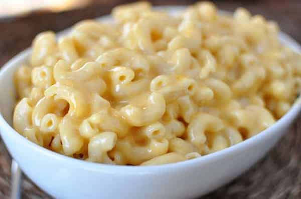

Macaroni and Cheese

Description
This is an amazing gluten free macaroni and cheese recipe I concocted over several years. It is a comibination of my grandmother's and mother's recipes that involves an extremely cheddar forward cheese sauce that can be poured on the macaroni noodles or baked with them traditionally.
The gluten-free (GF) angle came about because my wife has Celiac, so we had to make slight alterations. Honestly, you could not tell if blindly placed in front of you. Feel free to add different kinds of cheeses to make it your own.
Ingredients
- 4 Tablespoons Butter
- 3 Tablespoons GF Flour
- 2.5 Cups Milk (2% preferable)
- 1 lb Elbows (GF)
- 16 oz Sharp Cheddar Cheese (2 Blocks)
Steps
- If choosing to bake, preheat oven to 350 degrees Fahrenheit.
- Boil the GF elbows in a large pot with enough water to cover. Follow recommended times on the box, usually approximately 7-9 minutes, leaving them on the al dente side to avoid soggier GF noodles.
- Shred the blocks of Cheddar cheese into a large bowl.
- Melt the butter over medium heat in a quart sized pot that will contain the entirety of the cheese sauce.
- Once the butter melts, add the flour - constantly stirring with a whisk, creating a rue.
- Once the rue is complete, slowly pour the milk into the pot while continuing to whisk.
- Add handfuls of the shredded cheese to the pot while stirring the mixture.
- Once the elbows are cooked, strain and dump them into an oven-proof baking container.
- Once the cheese mixture is melted and consistent, pour over the elbows, and carefully stir the mixture into them.
- Bake for approximately 40 minutes or eat fresh!
- If you prefer a crispy layer, you may add crushed crackers or chips, and uncover for the last 10-15 minutes while increasing the temperature to 375 degrees.
Pair with this recipe. I promise it's not gross.